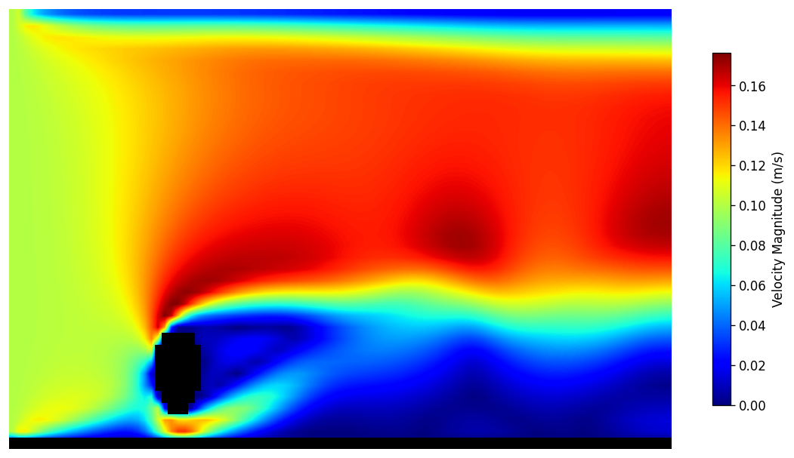
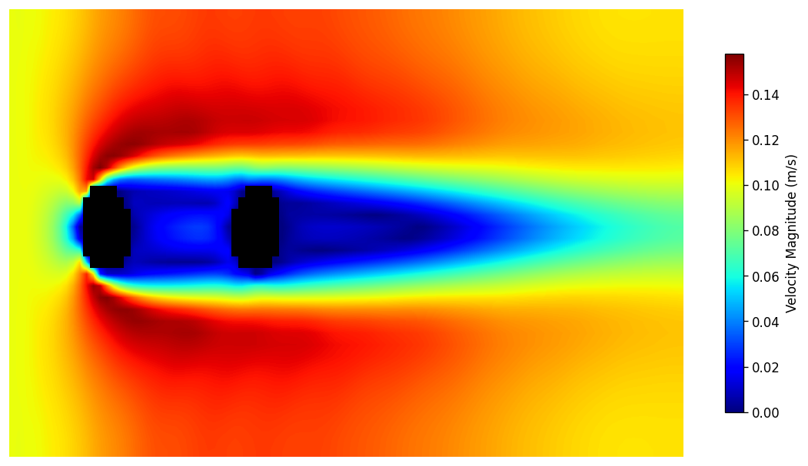
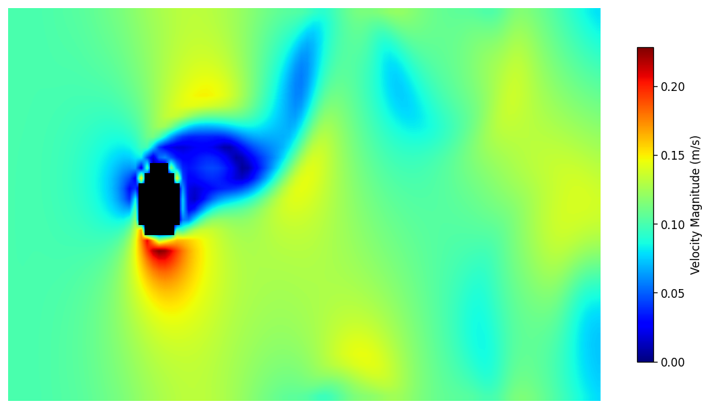

AK-Vortex: High-Performance C++ Lattice Boltzmann CFD Solver
How does air flow around a plane wing, a high-rise building, or a racing car? To predict this without expensive physical wind tunnels, engineers use Computational Fluid Dynamics (CFD) to simulate air as millions of interacting particles.
Commercial solvers like ANSYS are powerful tools, but their complexity hides away the underlying physics while you set the inputs and hope the result is right. To better understand CFD at the implementation level, I set out to build a solver from scratch.
AK-Vortex is a custom 2D CFD solver written in C++. Rather than solving the traditional, math-heavy fluid equations directly, it uses the Lattice Boltzmann Method (LBM), a particle-based approach, to simulate fluid behavior. The solver leverages OpenMP parallelization for high-performance computing and generates interactive visual flow data.
This project is my open, ongoing lab notebook. Every simulation is an experiment and every validation table is a measurement. The code is written so anyone can read it and follow how the solver works, from the core LBM method all the way to training neural networks on its results.
On top of the solver, AK-Vortex trains a Physics-Informed Neural Network (PINN) on its own results. A PINN is a neural network that learns to reproduce the flow field directly. Instead of waiting hours for a fresh simulation for the smallest of changes, you get results in a fraction of a second. This mirrors the modern SciML workflow used at NASA, Rolls-Royce, and Formula 1 teams, where a high-performance physics engine generates trusted baseline data and a neural network compresses it into a deployable model. This shows not only that the C++ solver works, but that its output can drive the machine-learning-augmented analysis the industry is moving toward.
Simulation Cases
The solver is tested against a growing set of validation cases spanning external aerodynamics, internal flows, urban microclimate, and multi-body interactions. Each case is an experiment: a different geometry, boundary condition, and Reynolds number designed to stress a specific capability of the solver, from smooth curved boundaries to turbulent separation. Every run produces velocity fields, quantitative validation against experimental or benchmark data, and a physical discussion of what the results mean.
Selected cases now pair the high-fidelity LBM solution with a trained PINN surrogate, presenting side-by-side LBM / PINN / error-delta comparisons and the resulting accuracy metrics directly on the case page.

Cylinder Wake
A cylinder in a steady flow, shedding the alternating von Karman vortex street.
View case →
Lid-Driven Cavity
A box with one sliding wall, spinning up a single rotating eddy; the classic benchmark of solver accuracy
View case →
Backward-Facing Step
Flow spilling over a sudden step, separating and reattaching downstream, like air behind a ledge or building.
View case →
Orifice Plate
A plate with one or more holes blocking a pipe, squeezing flow into a jet; the basis of pipeline flow meters
View case →
Urban Canyon
Rows of buildings lining a street, trapping and recirculating the wind into the stale air pockets found at city level.
View case →
Periodic Hills
A repeating train of smooth hills the flow must climb and separate behind, like wind over wavy terrain.
View case →
Flat Plate Boundary Layer
The project's primary validation case: a thin plate angled into the flow, growing the slow boundary layer that governs wing and airfoil drag.
View case →
Square Cylinder
A blunt square post shedding a wider, more turbulent wake than a round one
View case →
Cylinder Near Wall
A cylinder hovering just above a floor, where the wall pushes the lift upward; the ground effect that lifts race cars and planes near takeoff
View case →
Side-by-Side Cylinders
Two cylinders side by side, their wakes shoving each other around, like the tube bundles in a heat exchanger.
View case →
Rotating Cylinder
A spinning cylinder dragging the flow around it to make lift: the Magnus effect behind curveballs and rotor ships.
View case →Key Features
- MRT collision operator with independently tuned moment relaxation rates, based on d'Humieres 2002
- Smagorinsky LES subgrid-scale eddy viscosity with auto-activation at high Re
- Bouzidi interpolated bounce-back for smooth curved boundaries, including arbitrary polygons
- Flat 1D memory layout for cache-friendly access patterns on modern CPUs
- OpenMP parallel collision and streaming with collapse(2)
- Momentum exchange force extraction without body-fitted meshes
- Direct JSON output with per-frame velocity and vorticity fields
- 12 Google Test unit tests with GitHub Actions CI on Ubuntu and macOS